Search
SearchIntro to SearchStart StateGoal StateState SpaceOperator for Moving In the Goal State SpaceFunction to check if goal state reachedFunction to measure path costExample function definitionChess problem definitionExample Route PlanningProblem DefinitonRepresenting the ProblemSearch trees/N-ary treesN-ary treesSearch treesFinding a soultionRepresenting the searchThe evaluation methodsTime complexityPolynomialExponentialSpace complexityOptimalityCompletenessUninformed SearchAlgorithmsBreadth-first searchBFS exampleTime and space complexityEvaluationUniform-cost searchDepth-first searchDFS exampleGeneral DFS AlgorithmDFS evaluationDepth-limited searchIterative Deepening SearchIDS EvaluationBidirectional SearchUninformed Search Evaluation TableHeuristic SearchWhy Do We Need Heuristics?Heuristics vs AlgorithmsEvaluation FunctionsRequirementsExample: The 8 Puzzle ProblemHeuristicsInformed Search (Heuristic)Hill ClimbingIterative ImprovementsHIll Climbing AlgorithmDrawbacksRandom Restart Hill ClimbBest-first searchBFSGreedy and A*Greedy Search/ Greedy BFSExampleGeneral Best FirstGreedy Best First SearchGreedy Search EvaluationA* Search/A* BFS SearchA* BFS SearchA* SearchEvaluationNon-admissible heuristicsInformednessWhich method?
Intro to Search
The problem of search
Define the problem
Represent the problem spaces
- Search trees
- Graphs
Find solution by using a search algorithm
Define the problem
Start state(s)
- The initial state
Goal state(s)
- Where you want to get to
State space
- Search space
Operators for moving in the state space
- Successor function or action
A function to test if goal state reached
A function to measure path cost
Start State
Where is the problem starting from
e.g. chess
- Starting with all pieces in their starting positions on the board
Goal State
The end state
What you want to achieve
e.g. Noughts or crosses
- Played board with o's or x's as the winner
State Space
All legal positions in the generated search tree from start state to goal state
Generate state space by using goal state
Covers all possible outcomes at each stage of a search
e.g. chess
- A search state might represent a board position
Operator for Moving In the Goal State Space
Used to generate state space
Moves that are valid in your search space
e.g. chess
- Pawns can move forward either one square or two
Function to check if goal state reached
- Something to determine if the goal has been reached
Function to measure path cost
- To determine if this path is good or if there is a better one
Example function definition
The chess problem
- All board assignments give a huge state space
- different solutions
- Need help in choosing which move to make next because you can't try them all
Chess problem definition
Start state
- Initial board position
Goal state
- Checkmate (optimal) or stalemate
State space
- Set of all legal board positions
Actions
- Valid position moves
Goal function
- Is oppositions king in checkmate or stalemate
Path cost function
- Number of moves so far
Example Route Planning
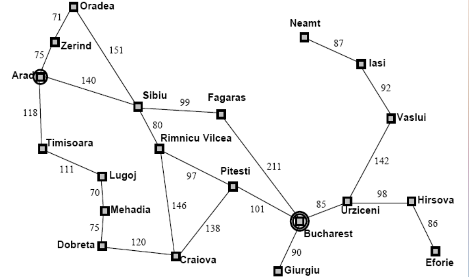
- Want to start in one position and travel somewhere else using shortest path
Problem Definiton
Start state
- Arod
Goal state
- Bucharest
State space
- Set of all possible Journeys (from Arod)
Actions
- Valid traversal from any two cities
Goal function
- Check to see ig you're at the destination
Path cost function
- Sum of the distance travelled
Representing the Problem
Data structures
Trees
- Binary trees
- Binary search trees
- N-ary trees
Graphs
Binary trees
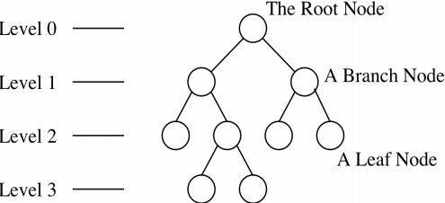
Depth of 3
Each circle is a node (snapshot state)
Each line is a link
- Legal move in state space as defined by operators
Branching factor of 2
- Because each node has two branches
Binary Search Tree
- Either it is empty or each node contains an identifier
- All identifiers in the left sub-tree are less than the identifier in the root node
- All identifiers in the right sub-tree are greater than the identifier in the root node
- The left and right sub-trees are also binary search trees
Search trees/N-ary trees
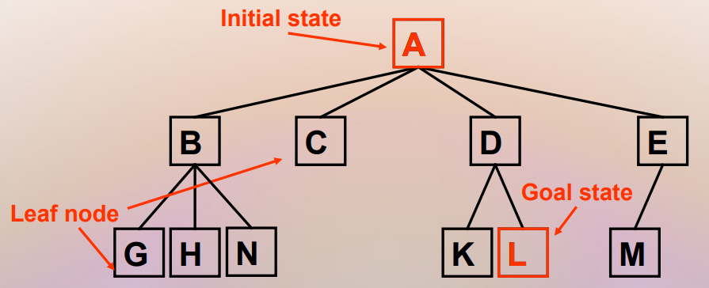
Root is null state (or initial state)
Edges represent one choice
- Resulting from the operations
Child states/nodes represent extensions
Leaf states/nodes are solutions or failures
N-ary trees
- A node may have any number of children
- Most problems cannot be represented in a binary tree
- Most problems cannot be ordered for binary search
- Therefore, n-ary trees are usually used to represent search problems
Search trees
Search algorithms do not store a whole search tree
Would require a lot of space
Can discard already explored nodes/states in search tree
if problem is a graph
i.e. there are loops
- Then we need to keep track of explored states
Search algorithms store the frontier of search
- i.e. the nodes in a search tree with some unexplored children
Finding a soultion
Search algorithms are used to find paths through state space from initial state to good state
Find ititial (or current) state
Check if goal found
- halt if so
Use operators to expand all next nodes
Use search techniques to decide which one to pick next
- Either use no information (uninformed/blind search)
- Or use information (informed/heuristic search)
Representing the search
Partial
Only store the frontier of search trees
- Stack
- Queue
- Priority queue
Full
Store the whole tree
- Binary trees/n-ary trees
A small finite state space can result in an infinite search tree
- If there is a looping condition
- This means the problem can't be solved
The evaluation methods
Time complexity
Number of nodes generated in a search
Finite number searching infinite space
Computational complexity
Depends on branching factor and depth of the shallowest solution
- The branching factor is equivalent to the the number of operators that are available at each level
Polynomial
If time taken can be expressed as a polynomial
- is the largest part
- in Big O expressed as O(n4)
Exponential
- t = 1, 10 computations
- t = 2, 10 * 10 computations
- t = 3, 103 computations
- t = n, 10n computations
- Order of complexity O(10n )
Space complexity
- The max number of nodes that can fit in memory
Optimality
- Is it guranteed that an optimal solution can be found
Completeness
- If there is a solution available will it be found
Uninformed Search
Algorithms
- Breadth-first
- Uniform-cost
- Depth-first
- Depth-limited
- Iterative deepening
- Bidirectional
Breadth-first search
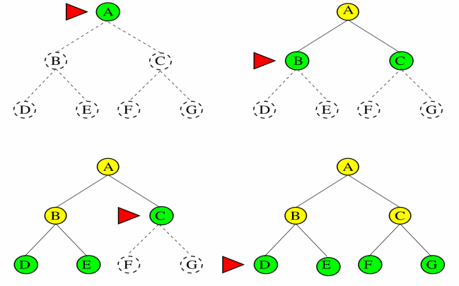
Algorithm
Start at A, the root
- Check if it's the goal
If it's not expand the children and generate the next level
Check if any of them are the goal
If not generate it's children and move on
Use a queue
BFS example
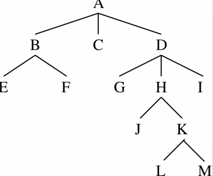
- Put A on queue
- Examine A – not a solution
- Remove from queue and place on HAVE-TRIED
- Add B C and D to the back of queue
- Repeat until solution found
Time and space complexity
Consider a branching factor of b
- Generate b nodes at level 1, b2 at level 2 etc...
- Worst case the solution is at depth d
- Worst case you would expand all but the last node
Total number of nodes generated
- b + b2 + b3 +... + bd = O(bd)
- Every node generated must remain in the memory as it's either in the frontier or an ancestor of a frontier node
Evaluation
Is complete
- Yes, providing branching factor b is finite
Is optimal
- Yes, if step costs are identical
Has time and space complexity of O(bd)
- Where d is the depth of shallowest solution
Will find shallowest solution first
Requires a lot of memory
Can be very efficient if there are many equally good solutions
Uniform-cost search
- Modifies breadth-first search
- Expands the lowest path cost rather than the shallowest unexplored node
- Dosen't track number of steps but rather the total cost
- Could get stuck in an infite loop if zero-cost action leads back to the same state

Start at s
see if it's the goal
If it's not carry on
We are looking for minimum value so put it in a priority queue and expand lowest value adding up cost as you go
Identical to breadth first search is cost of all steps is equal
Guranteed complete and optimal if cost of every step is positive
Finds the cheapest solution provided that the cost of every step is positive
Finds the cheapest solution provided the cost of path never decreases (non-negative operators)
If C* is cost of optimal solution and every action costs at least C
- Worst case time and space complexity is O(b1+C*/C)
- This can be much greater than bd
- When all step costs are equal O(b1+C*/C) = bd
Depth-first search
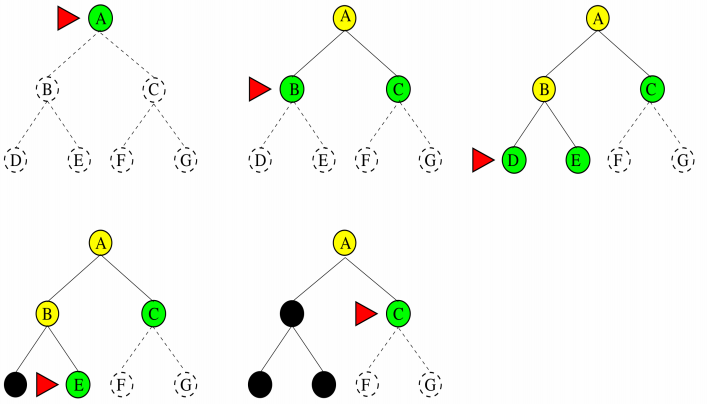
- Start at A
- Is it the goal
- If not expand and put children on a stack
- Move on examine B
- Not so put D and E on the stack and examine those
DFS example
- Put A on the stack
- Check if A is the solution
- It's not so pop it from the stack and place on HAVE_TRIED
- Push B, C and D onto stack
- Repeat untill solution found
General DFS Algorithm
Put start node on stack
Untill you have no more nodes on your stack
Examine the first node in the stack
- If it's the solution stop
Add any children of node to stack
DFS evaluation
Stores only a single path from the root to a leaf node and remaining unexplored sibling nodes for each node on the path
Space requirement O(bm) for max depth
- b is branching factor
Time complexity O(bm)
Can get stuck down the wrong path
Some problems have very deep search trees
Is neither complete nor optimal
Should be avoided for problems with large or infinite maximum depths
Main advantage is memory use
Depth-limited search
- Avoids pitfalls of DFS
- Imposes a cut off on the max depth
- Not guranteed to find the shortest solution first
- If depth is too small search is not complete
- Complete if l(depth limit) >= d(depth of solution)
- Time complexity is O(bl)
- Space complexiatity is O(bl)
Iterative Deepening Search
- Tries all possible depth limits in turn
- Solves the problem of deciding on the limit to set
- Combines the benefits of BFS and DFS
- Order of expansion is similar to DFS
- Some states are expanded multiple times
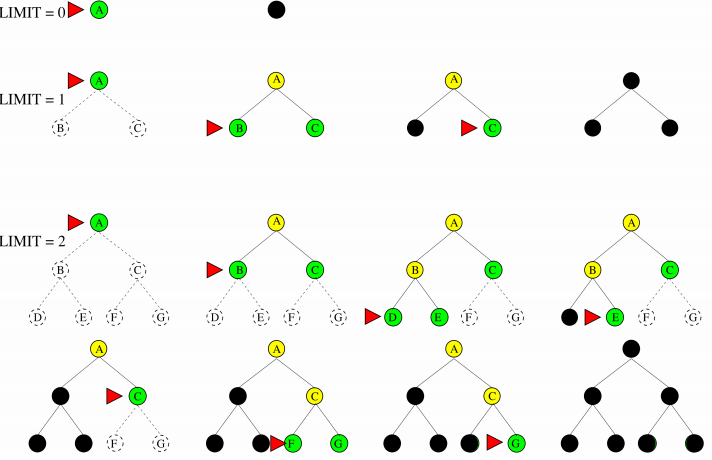
Use depth limited search but iteratively increase limit untill a solution is found
Each time the depth is increased the stack is emptied
IDS may seem wasteful as it's expanding nodes multiple times
- But the overhead is small in comparison to the growth of an exponential search tree
For large search spaces where the depth of the solution is not known then IDS is preferred
IDS Evaluation
Advantages
- Is complete and finds optimal solutions
- Finds shallow solutions first
- Always has a small fontier
Has time complexity O(bd)
Nodes on bottom level are expanded once
Those next to bot expand twice etc...
Root expanded d times
Has space complexity O(bd)
Bidirectional Search
- Simultaneously search both forward from the initial point and backwards from the goal
- Stop when the two searches meet
- bd/2 + bd/2 is much less than bd
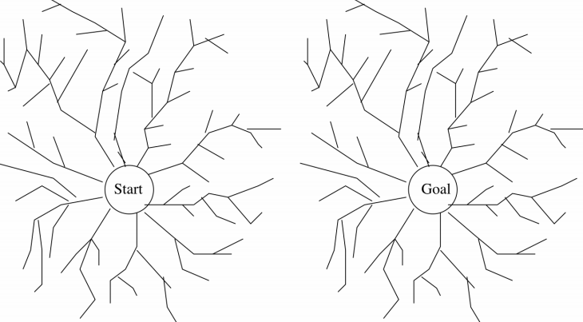
- Only need to go halfway in each direction
- Reduces time complexity O(bd/2)
- Need to store the whole tree for at least one direction
- Each new node is compared with all generated from the other tree in constant time using a hash table
- Increases space complexity O(bd/2)
Uninformed Search Evaluation Table
| Criterion | Breadth First | Uniform Cost | Depth First | Depth Limited | Iterative Deepening | Bi Directional |
|---|---|---|---|---|---|---|
| Time | bd | b1+(c*/c) | bm | bl | bd | bd/2 |
| Space | bd | b1+(c*/c) | bm | bl | bd | bd/2 |
| Optimal? | Yes | Yes | No | No | yes | Yes |
| Complete? | Yes | Yes | No | Yes, if l >= d | Yes | Yes |
Heuristic Search
- A heuristic is a rule or principle used to guide a search
- It provides a way of giving additional knowledge of the problem to the search
- Must provide a reasonably reliable extimate of how far a state is from a goal or the cost of reaching the goal via that state
- A heuristic evaluation function calculates such distances or costs
Why Do We Need Heuristics?
- Large state spaces of possible solutions
- Exponentially based problems
- Need to have practical ways of determining a solution
- Suitable for problems in which path cost is irrelevant
Heuristics vs Algorithms
A correct algorithm will find you the best solution given good data and enough time
- It is precisely specified
A heuristic gives you a workable solution in a reachable amount of time
- It gives you a guided ot directed solution
Evaluation Functions
- There are an infinite number of possible heuristics
- Criteria is that it returns an assessment of the point in the space
- If an evaluation function is accurate it will lead directly to the goal
- More realistically this usually ends up as "seemingly best search"
- Traditionally the lowest value after evaluation is chosen as we usually want the lowest cost or nearest
- Estimate of expected activity value from a current position e.g. value for pieces left in chess
- Way of judging the value of a position
- Humans have to do this as we do not evaluate all possible alternatives
- These heuristics usually come from years of human experience of playing a game
Requirements
Computation must not take long
- The function will be applied to every expanded state in the search
Ideally should be:
Accurate
- provide a reasonable estimate of the amount of work required to get to the goal
Close to perfect:
- The closer the heurisitc estimate is to the actual cost of the goal, the better it is
Optimistic:
- Rather than pessimistic i.e. think that it's closer to the goal than it actually is
Heuristics can be combined to create even better heuristics
Example: The 8 Puzzle Problem
- Tile can be moved up, down, left and right
- Max branching factor 4
- Depth of solution is 26
- Average solution cost is about 22 steps
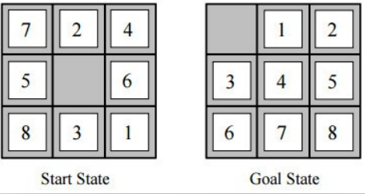
Heuristics
Number of tiles out of place (h1)
Manhatten distance (h2)
- Sum of the distance of each tile from it's goal position
- Tiles can only up, down, left and right which is like city blocks

h1 = 1
h2 = 1
- h2 doesn't take into account that you need yo move other tiles
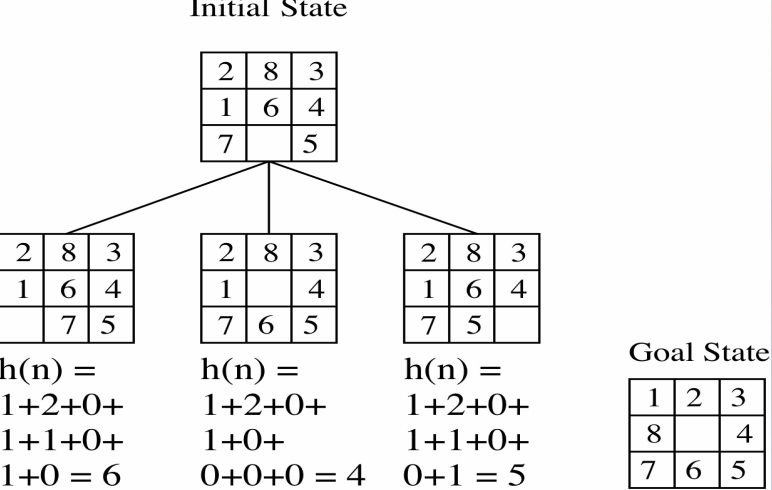
Informed Search (Heuristic)
Hill Climbing
Best-first search
- Greedy
- A*
Hill Climbing
- Consider all states are laid on the surface of a landscape
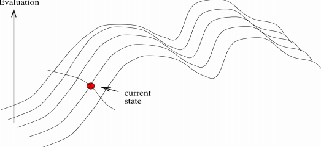
- We have a landscape with lots of points and each point corrosponds to the result of the evaluation function
Iterative Improvements
- Local search algorithms
- Paths typically not retianed so very little active memory is needed
- Move around the valeys trying to find the lowest valleys (optimal solutions)
- Useful for hard practical problems where the state description itself holds all the infomation needed for a solution
- Find reasonable solutions in a large or infinite state space
HIll Climbing Algorithm
Start with current state = initial state
Untill current state = goal state OR there is no change in current-state do:
- Get the successor of current-state and apply evolution function to each successor
- If one if the successors has a better score than set new current-state to the successot with the best score
Loop that moves in the direction of decreasing value
Terminates when a dip is reached
If there is more than one best direction then the algorithm will choose at random
Uses a priority list to put the best first
Drawbacks
Local minima
- Rather than global minima
Plateau
- Area of state space where the evaluation function is essentially flat
- The search will conduct a random walk
Ridges
- A ridge may have deeply steeping sides
- Causes problems when states along the ridge are not directly connected - the only choice at each point on the ridge requires uphill (downhill) movement
Random Restart Hill Climb
- Success of hill climb depends on shape of landscape
- Conducts a series of hill-climbing searches
- Start at randomly generated initial states
- Saves the result from any of the searches
- Can use fixed number of iterations or continue untill the best result does not change
Best-first search
Differnet best-first strategies have different evolution functions
Some use heuristics only, others use cost functions
- f(n) = g(n)+h(n)
- Where g(n) is a cost function
- h(n) is a heuristic function
BFS
Like hill climbing but eventually tries all paths as it uses list of nodes yet to be explored
- This is the basis for most informed search methods
- Uses a priority queue to order states on the basis of how promising they are
Start with priority queue = initial state
While priority queue is not empty do:
- Remove best node from priority queue
- If it is the goal node return success otherwise find it's children
- Apply evaluation function to children and add to prioirty queue
Greedy and A*
Our heuristics for these are:
- Heuristic function h(n) = estimated cost of the cheapest path from node A to a goal node
- Our cost function g(n) = cost to reach current position in the search
- For now we willintroduce the constraint that if n is a goal then h(n) = 0
Greedy Search/ Greedy BFS
Tries to expand the node that is "closest" to the goal assuming that it will lead to a solution quickly
f(n) = h(n)
- i.e. g(n) path cost is not considered
Differs from hill climbing
- Allows back training
Implementation
- Expand the "most desirable" node into the frontier queue
- Sort the queue in increasing order
Example
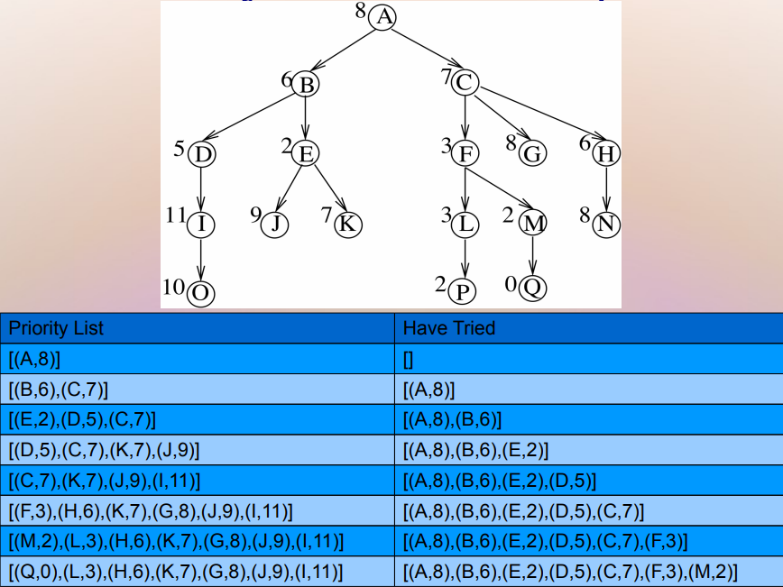
- Start at A
- Check if it's the goal
- Expand the nodes
- Choose lowest
General Best First
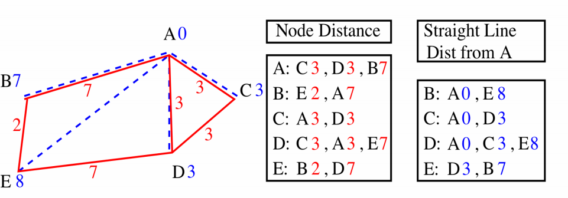
- Cost function g(n) = distancce travelled
- Heuristic evaluation function h(n) = straight line distance
Greedy Best First Search
Choose the least cost node using h(n)
If we start from R with goal A
Can travel to B (cost 7) or D (cost 3)
So D is chosen and B stored in case of back tracking
Nodes available from D are:
- A (cost 0)
- C (cost 3
- E (cost 7)
Choose A and the goal is reached
So path is E,D,A
Does not take into account the distance travelled to get to a low cost node
Can easily end up with sub-optimal solutions
Route found was E,D,A with distance cost 10
E,B,A is shorter with distance of 9
Greedy Search Evaluation
Does not always find the lowest cost solution
It is not optimal
It is not complete
- Same problem as depth-first
Time complexity of O(Bm)
Space complexity O(bm)
With a good heursitic these can be reduced
- Depends on the problem and the h(n) function
A* Search/A* BFS Search
A* BFS Search
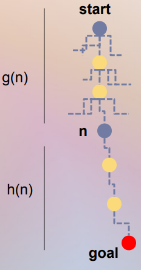
Evaluates nodes by combining two costs
g(n)
- The cost of getting tot he current point
- Path cost from start node to node n
h(n)
- The cost to get from the node to the goal
- Estimasted cost of the cheapest path from n to the goal
Total path cost + straight line distance using g(n) + h(n)
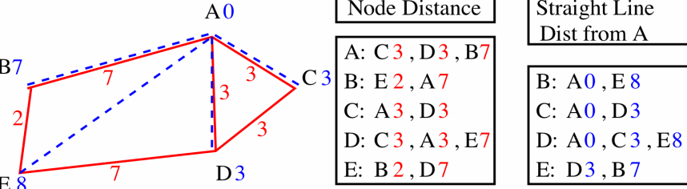
If we start from E with goal node A
From E
- B = g(b) + h(b) = 2+7 = 9
- D = g(D) + h(D) = 7+3 = 10
- So B is selected
- While remembering that f(D) = 10
So we have trabelled from E to B with total cost f(n) = 9
Continuing from B
A = g(A) + h(A) - 2+7+0 = 9
- 0 because that the straight line distance and A is a distance of 0 from A
E = g(E) + h(E) = 2+2+8=12
A is a solution and lower than previous f(D) = 10
- Search halted
- Route found E,B,A
A* Search
When h(n) = h*(n)
- h*(n) is actual cost to goal
- Only nodes in the current path are expanded
- Optimal solution is found
When h(n) < h*(n)
- Additional nodes are expanded
- Optimal solution is found
When h(n) > h*(n)
- Optimal solution can be overlooked
Evaluation
Complete and optimal if h(n) does not overestimate the true cost of a solution through n
Time complexity
Best case h(n) is perfect
- O(d)
Worst case h(n) = 0
- O(bd)
Space complexity
Keeps ll nodes in memory and safe in case of repetition
- O(bd)
- A* Ususally runs out of memory before it runs out of time
Non-admissible heuristics
May sometimes overestimate the cost to the goal
- So might not produce an optimal solution
However the advantage is that sometimes a non-admissible heuristic expands much fewer nodes so can lead to good enough solutions very quickly
Informedness
Comparison of heurisitcs
- if h2(n) >= h1(n) for all n (and both underestimate the actual cost = admissible) then h2 is more informed than h1 and is better for search
Which method?
- Uninformed search if no other infomation is availanle
- A* for medium sized spaces if heuristic knowledge is accceptable
- Hill climbing for discrete spaces where a sub-optimal solution is acceptable